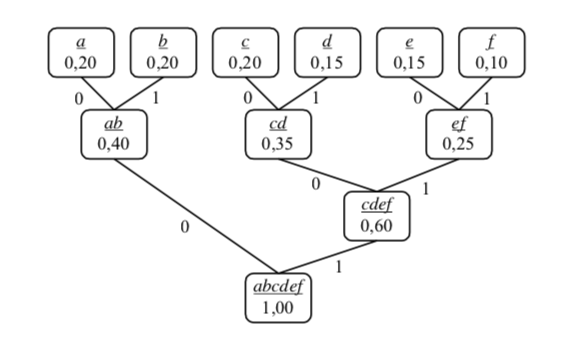

11. Кодиране и компресиране
План:
Задачи за домашно 13 и 14
Кодиране и компресиране
Премахване на нулите
Кодиране на редици
Алгоритъм на Хъфман
Код с разделители
Кодиране - декодиране
Компресиране - декомпресиране
Без загуба на информация
Със загуба на информация (закръгляване)
Кодиране на редици
Статистически (вероятностни) методи
Речникови методи
Вълнови методи
Фрактални методи
Програмиране = ++Алгоритми; (Programming = ++Algorithms;)
Адаптивно компресиране
**Премахване на нулите [10.3.1]
Задача: Кодиране на числови редици с много поредни нули.
Алгоритъм: Дългите последователности от нули да се
заменят с кодираща двойка, състояща се от специален символ, указващ
наличието на компресия, последван от брояч, указващ броя
последователни нули. Процесът на декодиране е тривиален и се свежда
до просто заместване на кодиращата двойка със съответния брой
нули.
Пример:
12 17 86 93 0 0 1 2 0 0 0 0 0 19 20 0 8 3 12 0 0 0 6
След кодиране със специален символ 0 се получава:
12 17 86 93 0 1 1 2 0 4 19 20 0 0 8 3 12 0 2 6
Използва се 1 бийт за кодиране на едно число.
** Кодиране на редици [10.3.9]
Задача: Кодиране на редици от символи (букви) с много
поредни еднакви символи.
Алгоритъм: Заменяиме всяка редица от еднакви символи с
един-единствен негов екземпляр, предшестван от число, указващо броя
на срещанията му.
Пример: BBBBBBBCCCCCAAAAAAAAAAAAACCCABABBCCAAAAAAAAAAAAAAAAAAAA
След кодиране: 7B5C13A3CABABB2C20A
Задача: Кодиране на редици от латински букви с
поредни еднакви букви.
Алгоритъм: Избира се
произволен символ от азбуката за escape (ESC) символ. Всяка негова
поява означава началото на нова "ESC редица" - следващите два
символа се интерпретират като двойка от вида XY
(брой_срещания,символ). Броят срещания на Y се дава от поредния
номер на X в азбуката. Пример: Нека Z e ESC символ.
В кода 7B5C13A3CABABB2C20A вместо 7
пишем G, вместо 5 — E, вместо 13 — M, вместо 20 — T и т.н.
Получаваме: ZGBZECZMACCCABABBCCZTA
Програмиране = ++Алгоритми; (Programming = ++Algorithms;)
Задача: Кодиране на редици от единици и нули с много
поредни еднакви символи.
Алгоритъм: Записваме само броя на поредните нули, после броя
на поредните единици и т.н.
Пример:
000000001111111000000 -> 8 7 6
000000011111111110000 -> 7 10 4
000001111111111111000 -> 5 13 3
000001111111111111000 -> 5 13 3
** Алгоритъм на Хъфман [10.4.2]
(Huffman
coding)
Задача: Код, при който по-често срещаните символи се
кодират с по-къси кодове (редици от битовe).
Алгоритъм:
1. Пресмятаме вероятностите за срещане на всеки символ (честота).
2. Построяваме дърво на Хъфман:
2a. Построяваме гора - от всеки символ тривиално дърво,
в корена (единствения връх) на което записваме вероятността на
срещане на съответния символ.
2b. Намираме двата върха с най-малки вероятности и ги
обединяваме в ново дърво с корен, съдържащ сумата от вероятностите
им.
2c. Ако има поне две дървета, преход към 2b.
3. Поставяме 0 на ляв клон и 1 на десен клон.
4а. Кодиране: За всяко листо (символ) определяме код от единици и
нули, получени оп пътя от корена до това листо.
4b. Декодиране: Тръгваме от корена и вървим по ляво или дясно
поддърво, докато стигнем листо - кодирания символ
Пример: afbabcdefacbabcdecde (дължина
20)
Пресмятаме вероятностите:
a - 4 пъти: вероятност 4/20 = 0.2
b - 4 пъти: вероятност 4/20 = 0.2
c - 4 пъти: вероятност 4/20 = 0.2
d - 3 пъти: вероятност 3/20 = 0.15
e - 3 пъти: вероятност 3/20 = 0.15
f - 2 пъти - вероятност 2/20 = 0.10
Началнa гора (6 дървета):
(a: 0,20)
(b: 0,20)
(c: 0,20)
(d: 0,15)
(e: 0,15)
(f: 0,10)
Обединяваме e и f (5 дървета) - в [] са наследниците на възела:
(a: 0.20)
(b: 0.20)
(c: 0.20)
(d: 0.15)
(e,f: 0.25)[(e: 0.15) , (f: 0.10)]
Обединяваме c и d (4 дървета):
(a: 0.20)
(b: 0.20)
(cd: 0.35)[(c: 0.20), (d: 0.15)]
(ef: 0.25)[(e: 0.15) , (f: 0.10)]
Обединяваме a и b (3 дървета):
(ab: 0.40)[(a: 0.20), (b: 0.20)]
(cd: 0.35)[(c: 0.20), (d: 0.15)]
(ef: 0.25)[(e: 0.15), (f: 0.10)]
Обединяваме cd и ef (2 дървета):
(ab: 0.40)[(a: 0.20), (b: 0.20)]
(cdef, 0.60)[(cd: 0.35)[(c: 0.20), (d: 0.15)], (ef: 0.25)[(e: 0.15),
(f: 0.10)]]
Обединяваме двете дървета:
(abcdef, 1.00)[(ab: 0.40)[(a: 0.20), (b: 0.20)], (cdef, 0.60)[(cd:
0.35)[(c: 0.20), (d: 0.15)], (ef: 0.25)[(e: 0.15), (f: 0.10)]]]

Кодиране:
Кодовете на символите са: a = 00, b = 01, c = 100, d = 101, e
= 110 и f = 111.
Кодът на съобщението от условието на задачата е:
00 111 01 00 01 100 101 110 111 00 100 01 00 01 100 101 110 100 101
110
или
0011101000110010111011100100010001100101110100101110
Компресия на Хъфман: 52 бита за 20 символа - 52/20 = 2.6 бита на
символ срещу 8 бита (min 4 бита) за символ.
Декодиране:
От корена 00 значи ляво-ляво, достигаме до a, отново тръгваме от
корена 111, достигаме до f и т.н.
Визуализация
Програмиране = ++Алгоритми; (Programming = ++Algorithms;)
** Код с разделители [10.4.4]
Задача: Кодиране с надежден код - промяна на един
бит да довежда до невъзможност за декодиране на най-много една-две
букви.
Алгоритъм: Всяка буква се записва в еднакъв брой битове
(равномерни кодове).
Пример: Дадено е входно съобщение със следните символи и
честоти: (a: 0,4), (b: 0,2), (c: 0,2), (d: 0,15) и (e: 0,05). Ако
използваме 3 бита за всяка буква (равномерен код), получаваме цена
3.
При кодиране по Хъфман, получаваме кода: (a = 11), (b = 10), (c =
01), (d = 001), (e = 000) с цена:
L = 2.0,4 + 2.0,2 + 2.0,2 + 3.0,15 + 3.0,05 = 2,2
Не бихме ли могли да получим код, съчетаващ висока надеждност и
относително добра ефективност, заемащ междинно положение между
равномерните кодове и кодирането по Хъф- ман? Пример за такъв код е
така нареченият код с разделители (англ. comma code).
Алгоритъм: Кодът на всеки символ завършва с разделител,
указващ края му (код с разделители). Сортираме буквите по вероятност
на срещане. На първия символ съпоставяме код 1, на втория - 01, на
третия - 001, на четвъртия - 0001 и т.н. Очевидно така
конструираният код е префиксен, позволява бързо и еднозначно
декодиране и в общия случай е по-ефективен от равномерните кодове.
Повреждането на единствен бит води до невъзможност за декодиране на
най-много две букви.
Пример: За горния пример получаваме кода: a = 1, b = 01, c =
001, d = 0001, e = 00001 с цена:
L = 1.0,4 + 2.0,2 + 3.0,2 + 4.0,15 + 5.0,05 = 2,25
Получихме сравнително надежден код с ефективност, близка до тази на
кода на Хъфман.